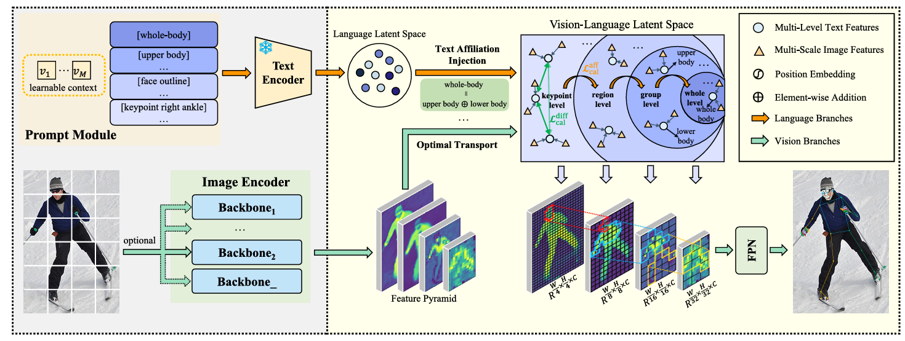
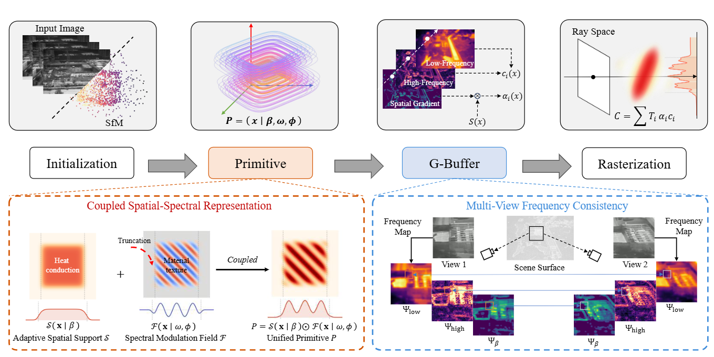
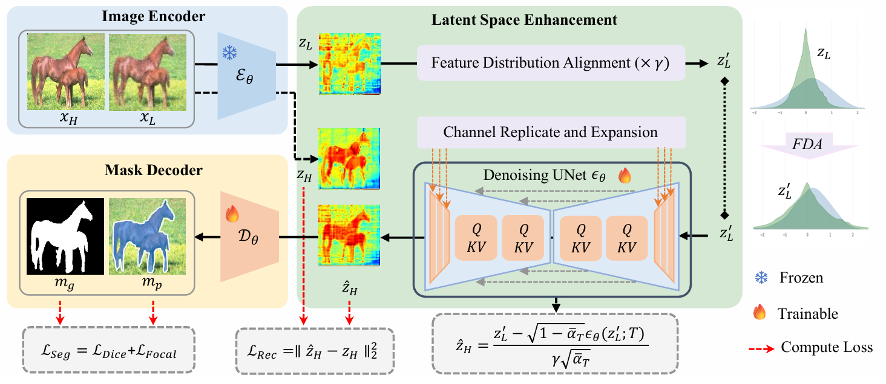
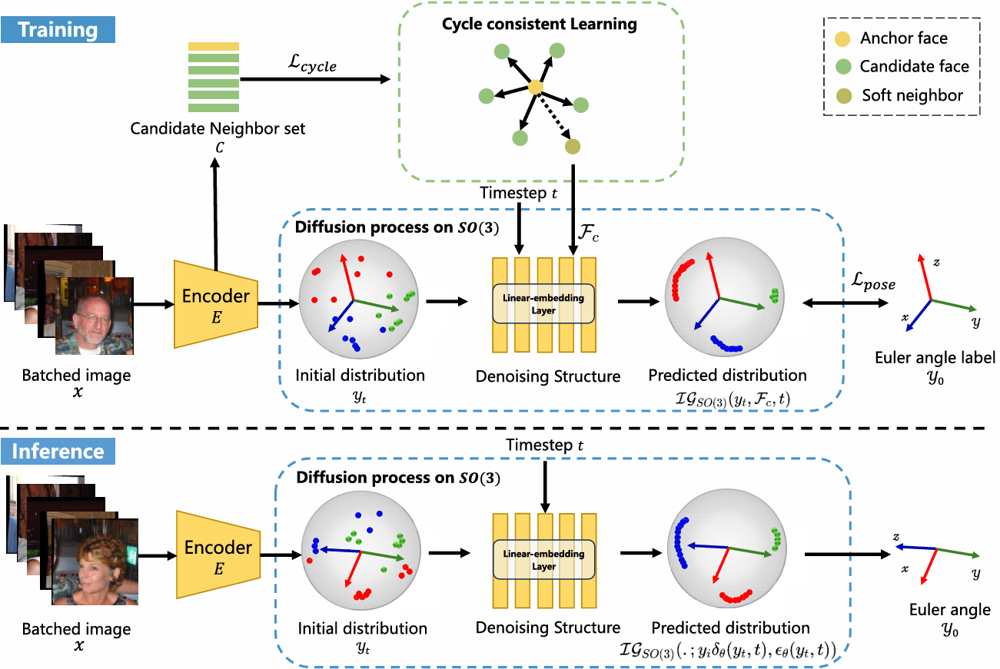
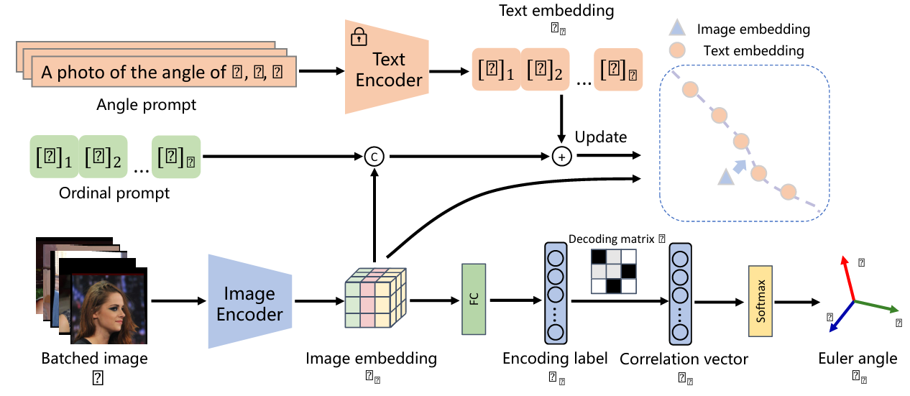
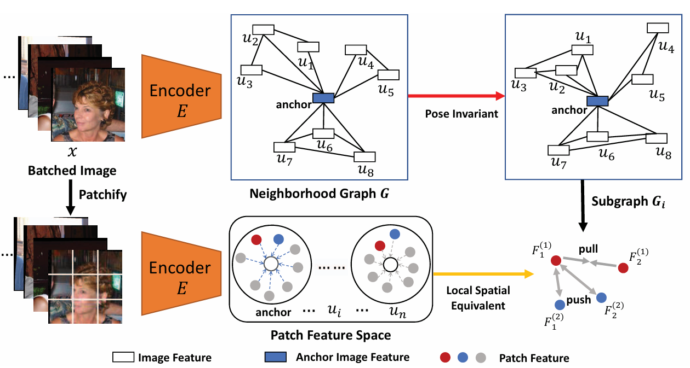
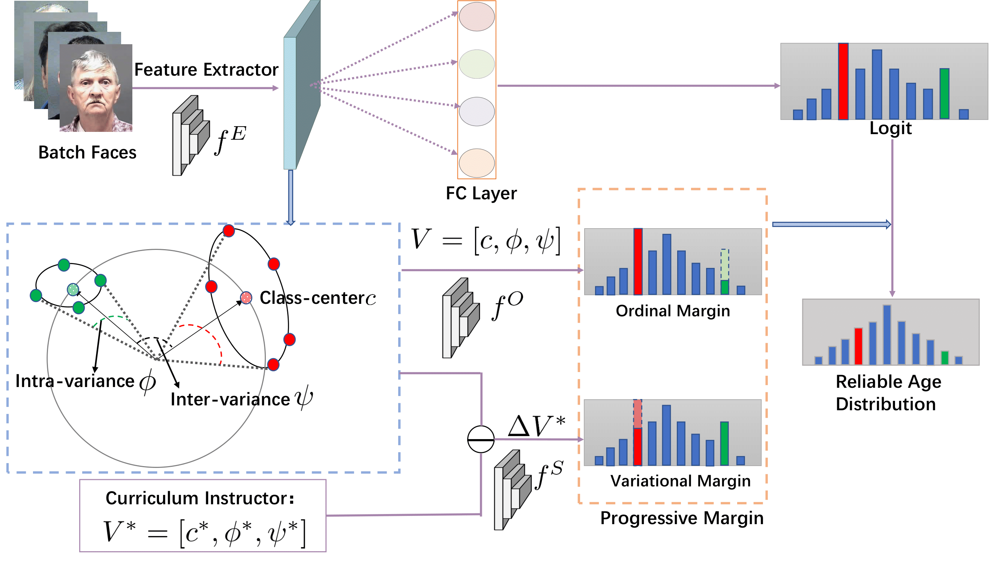

|
News
2026-01: One paper on whole-body pose estimation with vision–language models is accepted by IEEE TNNLS (SCI一区Top, IF: 8.9).
2026-01: One paper on thermal infrared novel view synthesis is accepted by IJCAI--ECAI 2026.
2025-03: One paper on robust segmentation for low-quality images is accepted by CVPR 2025.
2024-09: I joined Northwestern Polytechnical University as a Ph.D. student!
2024-04: One paper on head pose estimation is accepted by ICASSP 2024.
2024-03: One paper on head pose estimation is accepted by T-IP (SCI一区Top, IF: 13.7).
2023-07: One paper on facial pose estimation is accepted by ICME 2023.
2021-02: One paper on face visual analysis is accepted by CVPR.
|
|

|
A²Net: Affiliation Alignment Networks for Whole-Body Pose Estimation With Vision–Language Models
Ling Lin†, Yaoxing Wang†, Congcong Zhu, and Jingrun Chen
IEEE Transactions on Neural Networks and Learning Systems (TNNLS, CCF-B, IF: 8.9), 2026
[Link]
[Code]
A vision–language framework that aligns hierarchical textual affiliations with multiscale visual features via optimal transport, addressing scale variation and semantic ambiguity in whole-body pose estimation.
|
|

|
S³-TIR: Coupled Spatial-Spectral Splatting for Thermal Infrared Novel View Synthesis
Yaoxing Wang, Yuheng Li, Yan Di, and Shan Gao†
International Joint Conference on Artificial Intelligence and European Conference on Artificial Intelligence (IJCAI--ECAI, CCF-B), 2026
[Link]
[Code]
A physics-inspired framework that couples adaptive spatial support with internal spectral modulation via a unified generalized-exponential Gabor primitive for high-fidelity thermal infrared novel view synthesis.
|
|

|
Segment Any-Quality Images with Generative Latent Space Enhancement
Guangqian Guo, Yong Guo, Xuehui Yu, Wenbo Li, Yaoxing Wang, and Shan Gao†
IEEE/CVF Conference on Computer Vision and Pattern Recognition (CVPR, CCF-A), 2025
[Link]
[Code]
A SAM-based framework incorporating generative latent space enhancement via pre-trained diffusion models, enabling robust segmentation across images of varying quality and degradation levels.
|
|

|
Headdiff: Exploring rotation uncertainty with diffusion models for head pose estimation
Yaoxing Wang, Hao Liu, Yaowei Feng, Zhendong Li, Xiangjuan Wu, and Congcong Zhu
IEEE Transactions on Image Processing (T-IP, CCF-A, IF: 13.7), 2024
[Link]
[News]
[中文解读]
|
|

|
Language-Driven Ordinal Learning for Imbalanced Head Pose Estimation
Yaoxing Wang, Qian Yu, Ling Lin, Zhendong Li, and Hao Liu
IEEE International Conference on Acoustics, Speech and Signal Processing (ICASSP,CCF-B), 2024
[Link]
|
|

|
Structural Equivariance Self-Supervised Learning for Facial Pose Estimation
Yaoxing Wang, Heng Zhou, Zhendong Li, Xian Mo, and Hao Liu
IEEE International Conference on Multimedia and Expo (ICME(Oral),CCF-B), 2023
[Link]
A self-supervised learning framework with structural equivariance for facial pose estimation.
|
|

|
PML: Progressive Margin Loss for Long-tailed Age Classification
Zongyong Deng, Hao Liu, Yaoxing Wang, Chenyang Wang, Zekuan Yu, and Xuehong Sun
IEEE/CVF Conference on Computer Vision and Pattern Recognition (CVPR,CCF-A), 2021
[Link]
[Code]
[News]
The proposed PML typically incorporates with the ordinal margin and the variational margin, simultaneously plugging in the globally-tuned deep neural network paradigm.
|
|
Honors and Awards
First-class Academic Scholarship.
Second-class Academic Scholarship (x2).
|
|
Professional Activities
Gold Reviewer, International Conference on Machine Learning (ICML), 2026.
Reviewer, IEEE/CVF International Conference on Computer Vision (ICCV), 2025.
Reviewer, ACM International Conference on Multimedia (ACM MM), 2025.
Reviewer, Conference on Neural Information Processing Systems (NeurIPS), 2025.
Reviewer, International Conference on Learning Representations (ICLR), 2025.
Reviewer, IEEE/CVF Conference on Computer Vision and Pattern Recognition (CVPR), 2025.
Reviewer, European Conference on Computer Vision (ECCV), 2024.
Reviewer, Chinese Conference on Pattern Recognition and Computer Vision (PRCV), 2024.
Reviewer, IEEE International Conference on Multimedia and Expo (ICME), 2024.
|
|
{kind=link}